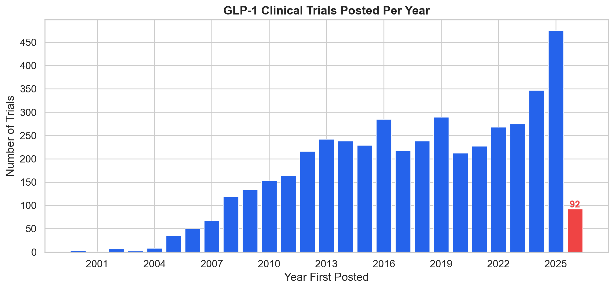
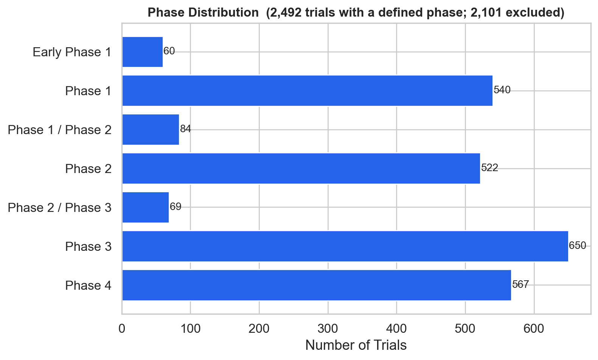
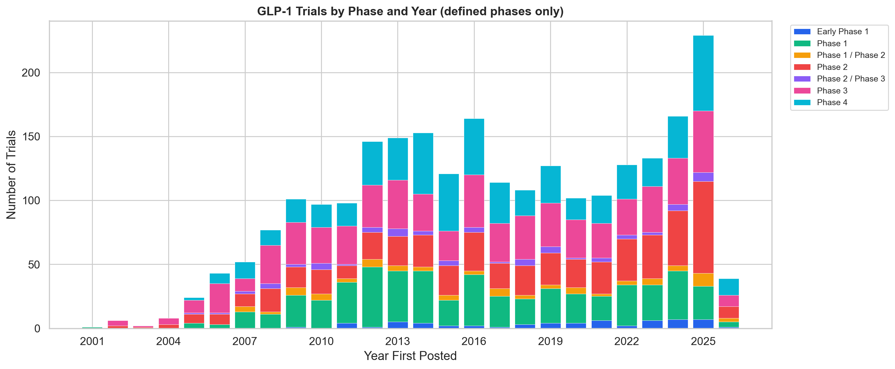
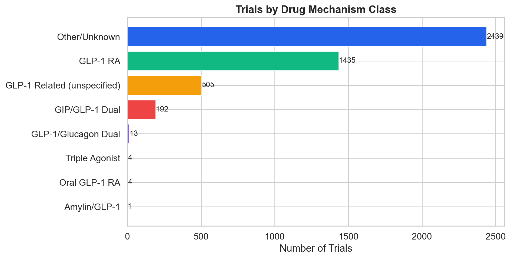
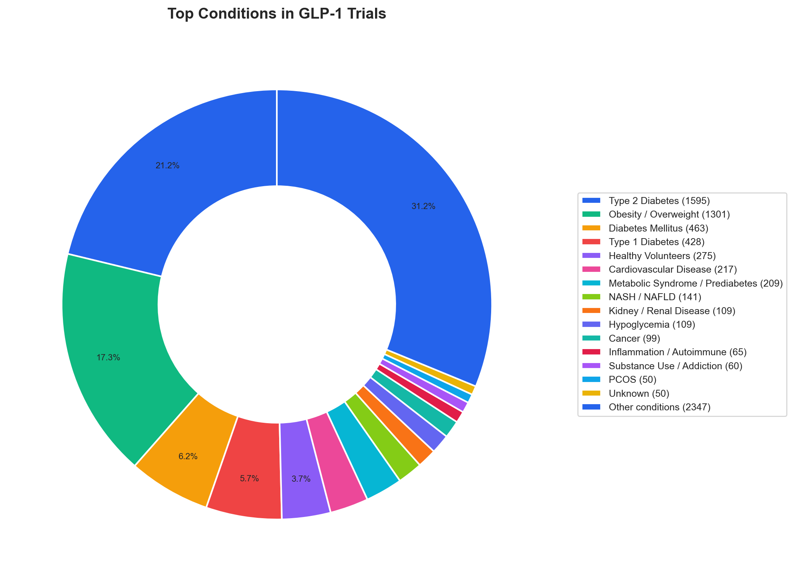
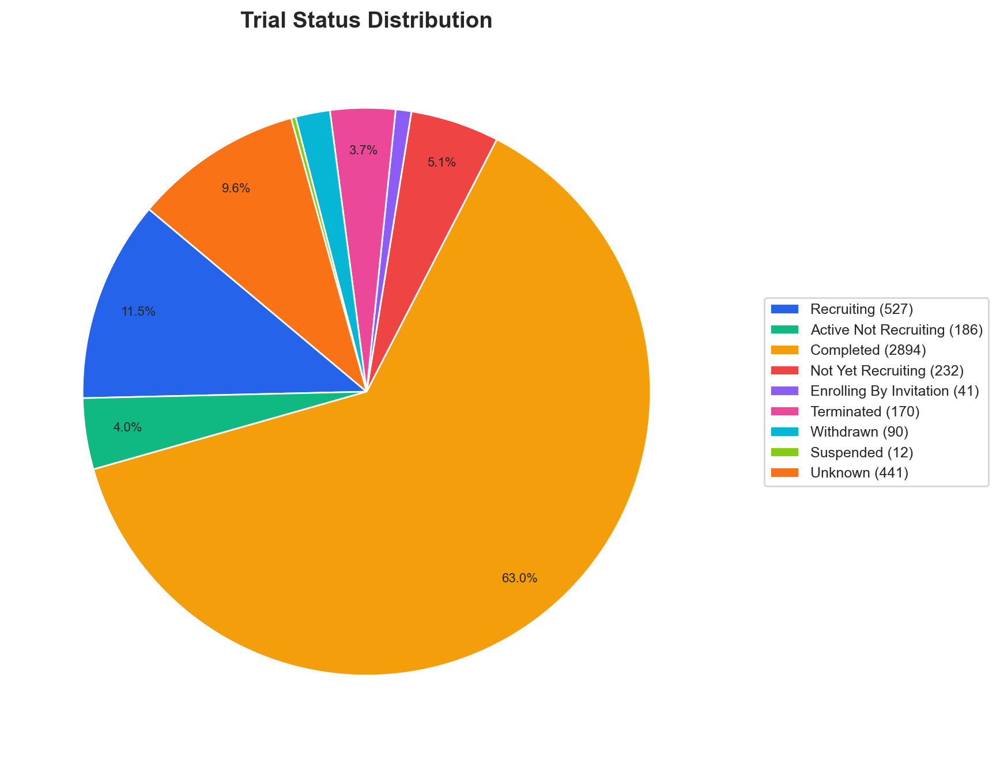
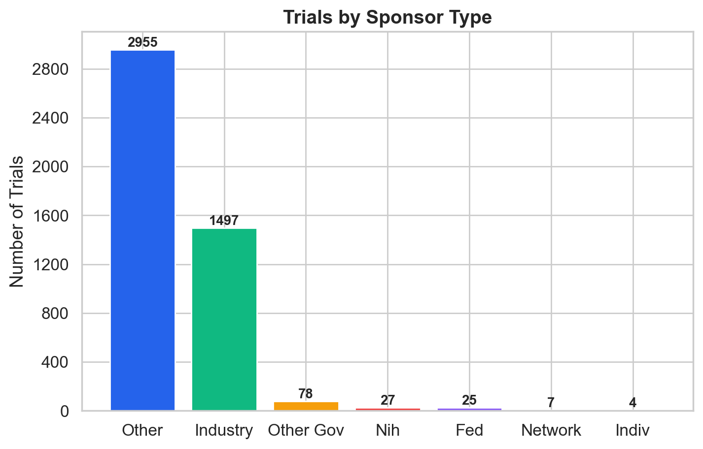

Generated 2026-02-28 13:12 — Data from ClinicalTrials.gov API v2
This analysis covers 4,593 unique clinical trials related to GLP-1 receptor agonists and related therapies, posted between 2000 and 2026.
The cleaning step identified the following issues in the raw data:
| Issue Category | Count |
|---|---|
| Total issues | 1187 |
| Drug names listed as conditions | 187 |
| Encoding issues fixed | 272 |
| Empty conditions | 0 |
| Empty interventions | 173 |
| Missing phase | 555 |
| Missing status | 0 |
See data/qa_report.txt for full details.
| Status | Count | % of Total |
|---|---|---|
| Completed | 2,894 | 63.0% |
| Recruiting | 527 | 11.5% |
| Unknown | 441 | 9.6% |
| Not Yet Recruiting | 232 | 5.1% |
| Active Not Recruiting | 186 | 4.0% |
| Terminated | 170 | 3.7% |
| Withdrawn | 90 | 2.0% |
| Enrolling By Invitation | 41 | 0.9% |
| Suspended | 12 | 0.3% |
Showing 2,492 trials with a defined phase. 2,101 trials excluded (NA = non-drug interventional, Not Specified = missing phase data).
| Phase | Count | % of Phased Trials |
|---|---|---|
| Phase 3 | 650 | 26.1% |
| Phase 4 | 567 | 22.8% |
| Phase 1 | 540 | 21.7% |
| Phase 2 | 522 | 20.9% |
| Phase 1 / Phase 2 | 84 | 3.4% |
| Phase 2 / Phase 3 | 69 | 2.8% |
| Early Phase 1 | 60 | 2.4% |
| Mechanism Class | Count | % of Total |
|---|---|---|
| Other/Unknown | 2,439 | 53.1% |
| GLP-1 RA | 1,435 | 31.2% |
| GLP-1 Related (unspecified) | 505 | 11.0% |
| GIP/GLP-1 Dual | 192 | 4.2% |
| GLP-1/Glucagon Dual | 13 | 0.3% |
| Triple Agonist | 4 | 0.1% |
| Oral GLP-1 RA | 4 | 0.1% |
| Amylin/GLP-1 | 1 | 0.0% |
| Therapy Type | Count |
|---|---|
| Non-drug | 1,680 |
| Combination | 1,394 |
| Monotherapy | 846 |
| Unknown | 673 |
| Sponsor Class | Count |
|---|---|
| Other | 2,955 |
| Industry | 1,497 |
| Other Gov | 78 |
| Nih | 27 |
| Fed | 25 |
| Network | 7 |
| Indiv | 4 |
| Condition | Broad Category | Trial Count |
|---|---|---|
| Type 2 Diabetes | Metabolic / Diabetes | 1595 |
| Obesity / Overweight | Obesity / Weight | 1301 |
| Diabetes Mellitus | Metabolic / Diabetes | 463 |
| Type 1 Diabetes | Metabolic / Diabetes | 428 |
| Healthy Volunteers | Other | 275 |
| Cardiovascular Disease | Cardiovascular | 217 |
| Metabolic Syndrome / Prediabetes | Metabolic / Diabetes | 209 |
| NASH / NAFLD | NASH / Liver | 141 |
| Kidney / Renal Disease | Kidney / Renal | 109 |
| Hypoglycemia | Metabolic / Diabetes | 109 |
| Cancer | Cancer | 99 |
| Inflammation / Autoimmune | Other | 65 |
| Substance Use / Addiction | Other | 60 |
| PCOS | Other | 50 |
| Unknown | Other | 50 |
| GI / Gastroparesis | Other | 49 |
| Neurological / Cognitive | Neurological | 45 |
| Dyslipidemia | Cardiovascular | 43 |
| Glucose Metabolism Disorders | Other | 32 |
| Hypertension | Cardiovascular | 25 |







Among all the GLP-1 clinical trials, one stood out:
Pistachio Intake and Nutrition-Related Outcomes in Individuals on GLP-1 Therapy
NCT ID: NCT07244445 | Status: RECRUITING | Phase: NA
As the video creator noted: participants will eat 53 grams (¾ cup) of pistachios per day while on GLP-1 therapy.
1. Data Fetch: Queried ClinicalTrials.gov API v2 with 11 GLP-1-related search terms, paginated, and deduplicated by NCT ID
2. Cleaning: Unicode normalization, condition splitting, drug-as-condition flagging, year extraction
3. Classification: Mapped interventions to mechanism classes (GLP-1 RA, GIP/GLP-1 Dual, Triple Agonist, etc.) and therapy types
4. Condition Analysis: Normalized condition variants, mapped to broad therapeutic categories
5. Visualization: Generated 7 publication-quality charts
6. Report: This document
Pipeline: 01_fetch_trials.py → 02_clean_data.py → 03_classify_mechanisms.py → 04_analyze_conditions.py → 05_visualize.py → 06_report.py